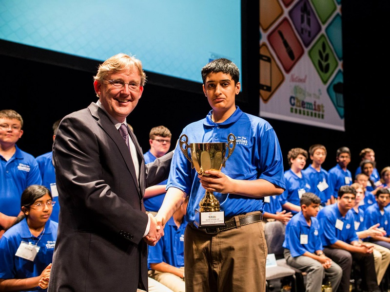

Goals of Science Infinity club - a non profit organization


 (800x526).jpg)


- Academic excellence in science through student coaching.
- On-the-go interactions and competitions with other like-minded students.
- Develop young leaders by providing leadership roles and opportunities.
- Raise the bar in science education and research.

We share similar goals as North South Foundation (NSF). It is run exclusively by volunteers. The only expenses we incur is if we buy any student supplies. We raise funds for charity.